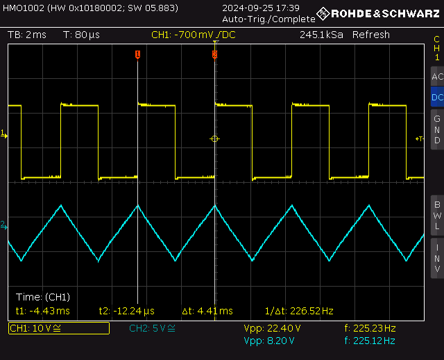
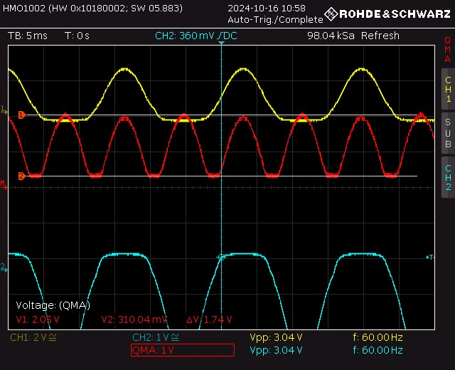
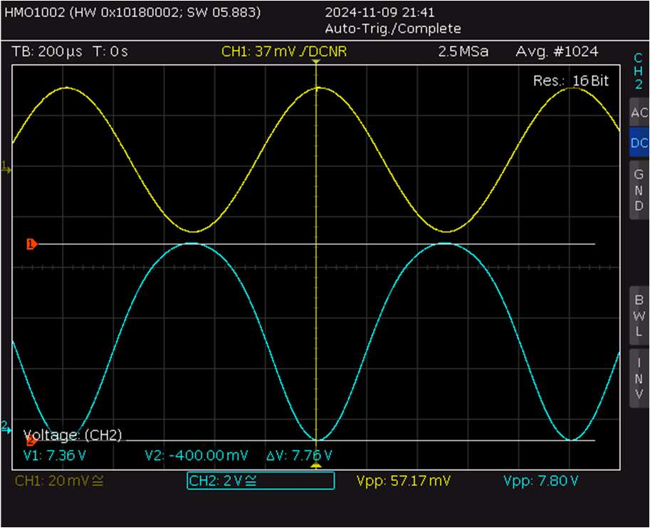
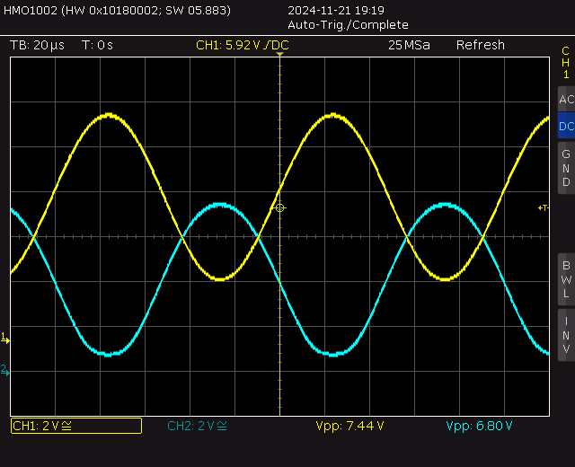

Electrical · Sept — Dec 2024
Characterization of Active Components
A four-lab ENSC 225 series with a consistent team — myself, Nadevni Waduge, and Dawson Wakelam — characterizing op-amps, diodes, BJTs, and MOSFETs, then using what we measured to design and validate real amplifier, rectifier, and trigger circuits.

Overview
Across four labs we worked through the core active components in order — operational amplifiers, diodes, bipolar junction transistors, and MOSFETs — using a Source/Semiconductor Parameter Analyzer, an oscilloscope, a function generator, and LTSpice to pull real parameters out of real parts rather than just trusting a datasheet. Every lab followed the same underlying discipline: measure the actual resistor and component values in circuit (never assume the nominal value), characterize the device itself, then build a circuit that depends on those numbers and check whether our measured gain, frequency response, or trigger voltages actually matched the theory, the datasheet, and an LTSpice simulation.
That comparison is where most of the actual learning happened. Op-amp offset voltage and bias current, diode dynamic resistance, BJT DC β and Early voltage, MOSFET threshold voltage shifting with substrate bias — none of these are visible in an idealized circuit diagram, but they're exactly what separates a calculated gain from a measured one. By the end of the series we'd built and validated inverting/non-inverting amplifiers, a Schmitt trigger and free-running oscillator, three different rectifier topologies, a common-emitter BJT amplifier, and two common-source MOSFET amplifier configurations — each one checked against hand calculations and simulation before we trusted the result.
Design & Build
Four Labs, Four Components
Each lab paired device characterization with a real circuit built to test what we'd just measured.
Gain, Frequency Response & DC Imperfections
We built non-inverting and inverting amplifiers on a TL084 chip at gains of roughly 10 and 100, and checked the measured gain against the theoretical value calculated from the actual (not nominal) resistor values — everything landed within a few percent. Sweeping the input from 10 Hz to 3 MHz gave us Bode plots and a unity-gain frequency around 2.5–3 MHz, confirming the classic gain-bandwidth tradeoff. We then derived the chip's real DC imperfections — offset voltage, bias current, and offset current — by solving three different circuit configurations with KCL/KVL in MATLAB, landing within the TL084 datasheet's specified range. The lab closed with a Schmitt trigger and a free-running oscillator, comparing calculated, measured, and LT-Spice toggle voltages and confirming the oscillator's ~290 Hz output against its RC-derived theoretical frequency.

I-V Characteristics & Rectifier Circuits
Using the parameter analyzer, we plotted forward and reverse I-V curves for a signal diode and a Zener diode, then extracted the signal diode's scale current (2.22×10⁻⁹ A) and ideality factor (0.544) from a linearized log plot. From there we measured small-signal resistance at three different forward bias currents and the Zener's own resistance and regulation voltage. The second half of the lab was rectifier design: a simple half-wave rectifier (a real 0.5 V diode drop, 0.125 ripple factor), a precision half-wave rectifier that used an op-amp to all but eliminate that drop (down to 0.04 V, with a 0.103 ripple factor), and a four-diode bridge rectifier with a filter capacitor that brought ripple down to roughly 0.7 V peak-to-peak.

Transistor Characterization & a Common-Emitter Amplifier
We swept I_C vs V_CE for both an NPN (CA3046) and a PNP (2907) transistor to extract DC β and Early voltage at several bias points, then mapped the NPN's large-signal transfer curve and overlaid a load line to see where it actually sat in its operating region. From there we designed and biased a single-stage common-emitter amplifier for a 500 µA collector current, measuring gain both with and without an emitter bypass capacitor — 0.98 unbypassed versus 144× bypassed, close to the ~46 dB theoretical bypassed gain — and compared its measured frequency response against an LT-Spice simulation of the same circuit.

Threshold Voltage, Transconductance & a CS Amplifier
For both n-MOS and p-MOS devices, we pulled threshold voltage and transconductance out of I_D vs V_GS sweeps at several substrate bias voltages — watching threshold voltage shift with substrate bias, the body effect in action — then pulled Early voltage and output resistance from I_D vs V_DS curves. With those parameters in hand we built two amplifier stages: a resistive-load common-source NMOS amplifier (measured gain of 2.84 against a theoretical 2.91), and a capacitively-coupled CS amplifier tested with and without a source bypass capacitor, mapping the resulting bandpass response — roughly 100 Hz to 100 kHz — and the real swing in gain and impedance the bypass capacitor produced.
Full Write-Ups
Lab Reports
The four full reports submitted for ENSC 225, one per component.